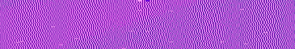

👹 ARTSTUFF.WTF

FRI 10/6
THE FOURTH WORLD
Institute For Art and Olfaction
7pm - 9pm
FREE
These artists question and challenge the idea of the Subject and of the very notion of an objective world by exploring the role of the physical and fluid body, ritual, mythology, language, and the natural and cultural world. They approach inter subjectivity as a domain of inquiry that spans the entire scope of human experience. They flow through worlds, above boundaries, under surfaces, around obstacles and inhabit the spaces in-between. Their work reverberates with energies and frequencies that can be defined as exceptionally rich and layered, transcending fixed notions of identity, language, and place. The exhibition points to the utter futility within binary oppositions, presenting instead the option of asymmetry as one between action and reflection providing a strong feeling for the uncanny and the ultimate weirdness of things. A weirdness that resides in the very presence of things and how they begin to rub against each other in visceral, tactile, sensual, and sensorial ways providing gaps and slips of indeterminate nature. Artists: Mercedes Dorame, Sonja Gerdes, Lindsay August-Salazar, Galia Linn, Karen Lofgren, Alison O’Daniel, Arden Surdam, Amanda Yates Garcia
LINK
Zaimph/Pod Blotz/Gabie Strong & Christopher Reid Martin/Kolovos
(the) Handbag Factory
9:30pm - 1am
$?
ZAIMPH - An artist whose alternately shimmeringly beatific and ucannily intense work has resonated through the underground world owing to her work with artists like Double Leopards and Hototogisu, Marcia Bassett is the exterminating and vivifying force who goes beyond boundaries of noise, free drone and dark psychedelia. Pod Blotz is a polymath artist researching the multi-dimensional interferences between haunted pulsations, tape textures, sonic resonance, electrical synthesis, video experiments and human/alien identities anomalies. Gabie Strong is a California artist and musician exploring spatial constructions of degeneration, drone and decay as a means to improvise new arrangements of self-reflexive meaning. Strong uses sound performance, radio broadcasting, environmental installation, photography and video as a mediums for experimentation. Peter Kolovos is a free-improviser from Los Angeles; he plays the electric guitar. Christopher Reid Martin came to birth the solo project known as of Shelter Death, as it has evolved into a project in which performance and sound interplay to make for a personal reactionary experience in a perpetually decaying world.
LINK
Rail Up 17: Mundial
Venue TBA (note: this one is sponsored by Red Bull)*
6pm - 4am
$10 presale / more at the door
* NGUZUNGUZU-Fade To Mind / Dise - LA, DJ FIRMEZA-Principe Discos - Portugal , LAVENTILLE RHYTHM SECTION -Direct from TRINIDAD performing live- TYGAPAW, Fake Accent - Jamaica / NY, RIOBAMBA -Apocalipsis- NY, KELMAN -RAIL UP- FOREIGNER -RAIL UP- MUÑEKA -RAIL UP- LIL M, LA HELIKONIA -Intersessions- Colombia / LA, AMAZONDOTCOM, LA*
LINK

SAT 10/7
Dublab 18th Anniversary Party
Zebulon
3pm - 1am
$10
The online radio pioneer will be celebrating 18 years of broadcasting freeform music and new independent voices from Los Angeles and worldwide. An all-day celebration featuring live music performances, DJ sets, and art visuals from an array of breakout artists including Dublab’s very own in-tuned selectors. In usual Dublab fashion — surprise guests will be dropping by to support the fundraiser! Past years include Flying Lotus, Daedelus, Egyptian Lover, Animal Collective. Don't miss. Dozens of DJs and performers including Julia Holter, Duppy Gun, SK Kakraba, and many others. Expect hip hop, electronic, experimental vibe music. Stones Throw Records, Mexican Summer, Subpac, Touch Vinyl, etc. Hit link for full schedule. World vibes in Zebulon’s front-lounge. Live sets in the eclectic main room. Dancing, beats and grooves in the sunset-lit patio.
LINK
Sharif Farrag: Smokeless Fire
Gallery1993, parked at 4020 Wall St. 90011
6pm - 9pm
FREE
Gallery1993 is a gallery in a Crown Vic. Tonight it will be parked at 4020 Wall St with an exhibition by Sharif Farrag.
LINK
Voices of the Xtabay: A Tribute to Yma Sumac
Hammer Museum
7:30pm
FREE
A genre-bending lineup of Los Angeles Latinx vocalists and musicians reimagine the songs of legendary Peruvian singer and longtime L.A. resident Yma Sumac, whose vocal range was said to be well over five octaves. Inspired by the Hammer exhibition Radical Women, the evening features a band led by Alberto López of Jungle Fire backing performances by: Empress Of, Nite Jewel, Maria Elena Altany, Ceci Bastida, Dorian Wood, Carmina Escobar, Francisca Valenzuela. Featuring emcee Carolina Miranda and DJ Francesca Harding.
LINK

SUN 10/8
soundShoppe
Center for the Arts Eagle Rock (SASSAS)
1pm - 4pm
FREE
Come out and make some noise! soundShoppe is a FREE monthly sound workshop/noise jam session for experimental musicians and sound artists, presented by SASSAS and Center for the Arts Eagle Rock. Experienced musicians to novices, all are welcome. The ongoing sessions are led by
 LAFMS Co-founder Joe Potts. Please register online if you plan to attend.*
LINK
Teenage Engineering #ems at Club Pro
Club Pro LA
3pm - 6pm
FREE
Pocket Operator Workshop with Teenage Engineering. This class is complimentary and open to all with an interest in learning more about Teenage Engineering Pocket Operators. Sequence beats, bass lines and melodies. Class and demos by #ems mentor Mark DeNardo. Live performances by Elliott Reed, Oh, Fix Lemons.
LINK

ABOUT
ARTSTUFF.WTF is a minimal website listing page for selected mostly DIY art (and etc) events going on around Los Angeles. It is a personal list of 5 - 10 events sent out to friends weekly, and made available online here for bookmarking and quick reference. There is an archive of past listings. Sign up to receive weekly emails. Made by Lee Tusman.